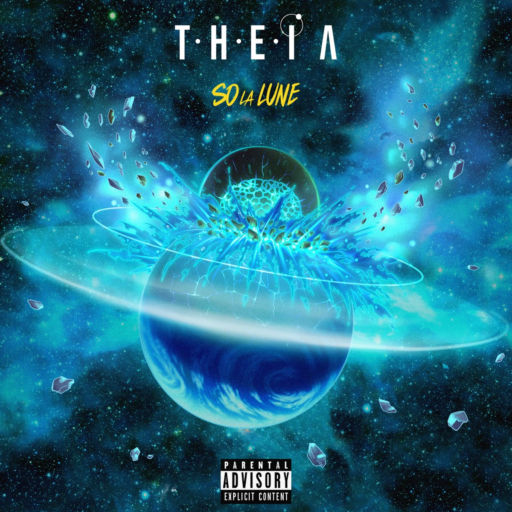

 Pourtant court de cinq titres, Théia profite d’une grande diversité musicale. Le projet s’ouvre sur Coup d’Eclat, une mise en bouche de ce qui attend l’auditeur sur les plages à suivre. Le morceau a beau avoir une interprétation très forte, So La Lune dévoile sa folie mélodique sur les titres qui suivent, en particulier sur Seven Up, morceau central et clef de voûte du projet. Dans ce dernier, le rappeur crée des explosions avec ses cordes vocales, certainement du même acabit que celles qui déchirent la planète Terre sur l’image de couverture de son EP. Côté beats, cette diversité n’est pas en reste : allant des plus uptempo aux plus reposées, les productions du projet connaissent une diversité intéressante, montrant l’étendue des capacités du rappeur en terme de placement. Mention spéciale à Podium, produit par Kon Queso, dont les rythmiques saccadées, couplées à la voix lancinante de So La Lune produisent une hypnotisante chanson où se mélangent backs vaporeux, notes de piano flottantes et la mélancolie de l’interprète. Entremêlant egotrip, nostalgie et amours perdues, l’écriture du rappeur couvre de nombreux horizons, sans jamais perdre le nord. Théia est donc un opus audacieux et profitant d’une réalisation léchée. S’il est connu que les navigateurs marins se repèrent grâce au soleil, les amateurs de rap devraient songer à regarder La Lune.
| titres | durée |
| 1° Coup d'éclat | 2min10sec |
| 2° Lune City | 3min31sec |
| 3° Seven Up | 3min07sec |
| 4° I8 | 3min38sec |
| 5° Podium | 2min57sec |